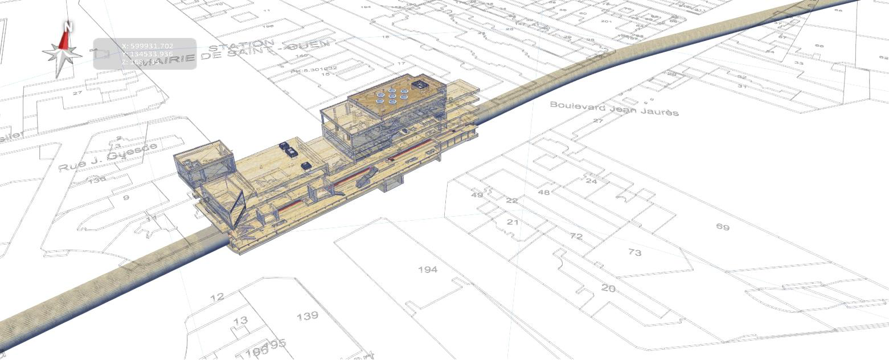

Tunnel - 1.0 [Deliverables]
Cover
Contents
Foreword
Introduction
Scope
Normative references
Terms, definitions, and abbreviated terms
Fundamental concepts and assumptions
Core data schemas
Shared element data schemas
Domain specific data schemas
Resource definition data schemas
A. Computer interpretable listings
B. Alphabetical listings
C. Inheritance listings
D. Diagrams
E. Examples
F. Change logs
Bibliography
Index
Select a section to navigate.
